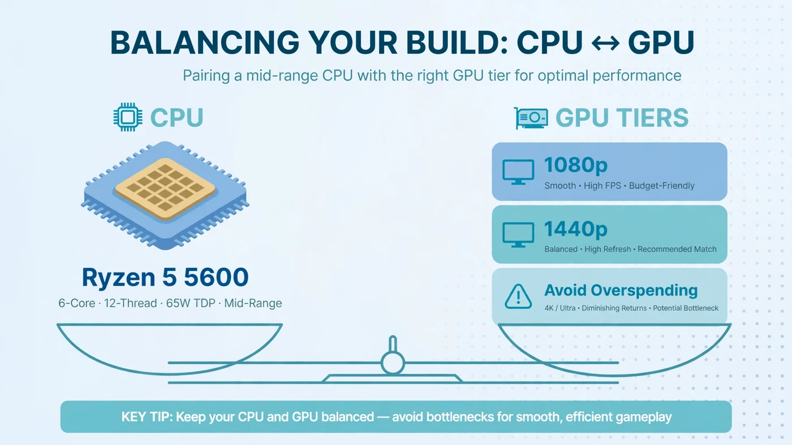

Best GPU for Ryzen 5 5600 and 5600X: Balanced Pairing Guide
The best GPU for a Ryzen 5 5600 or 5600X is a mid-range card: roughly the RTX 4060 or RX 7600 class for 1080p, up to the RTX 4070 or RX 7800 XT class for 1440p. Go much higher and you pay flagship prices for performance the processor cannot always feed. This guide explains where the sweet spot sits, which tiers to avoid, and how to check your own pairing before you buy.

The Short Answer: Pair It With a Mid-Range GPU
The Ryzen 5 5600 family is a mid-range processor, and it pairs best with a mid-range graphics card. Where "mid-range" ends moves with your resolution:
- 1080p gaming: the sweet spot is the RTX 4060 or RX 7600 class — fast enough for high settings while staying within what the 5600 can feed.
- 1440p gaming: the sweet spot moves up to the RTX 4060 Ti or RX 7700 XT class, stretching to the RTX 4070 or RX 7800 XT class, since the GPU carries more of the load.
- Above that: flagship-class cards are poor value on a 5600. They still work, but in many games the processor sets the frame rate and the extra headroom goes unused.
The one rule to remember: match the card to your monitor first and your processor second. A 1080p 60Hz monitor needs far less GPU than a 1440p 165Hz one.
What the Ryzen 5 5600 and 5600X Can Actually Feed
Both chips are 6-core, 12-thread Zen 3 processors on the AM4 platform, in the 65W power class, with DDR4 memory and PCIe 4.0 support. The 5600X boosts slightly higher, but the difference is small enough that every recommendation here applies to both chips. Neither has integrated graphics, so a discrete card is required.
In practice, six fast Zen 3 cores feed a mid-range card in most games. The limits show up in specific situations: very high frame rates in CPU-heavy multiplayer titles, simulation games that lean on a few threads, and 1080p gaming with a card far above the sweet spot.
A pairing is never good or bad in the abstract — only for a resolution, a game and a frame-rate target. For the general method behind that judgement, read our guide to choosing a CPU and GPU combination.
Best GPUs for 1080p Gaming With a 5600
At 1080p, the processor works hardest relative to the graphics card, because each frame has fewer pixels to shade. That makes 1080p the resolution where overspending hurts most.
| Tier | Example class | Best for |
|---|---|---|
| Budget 1080p | RTX 3050 / RX 6600 class | Competitive and older titles at high settings, or a stopgap while saving for a better card. |
| Sweet spot 1080p | RTX 4060 / RX 7600 class | Most 1080p gaming at high settings. The default recommendation for a 5600. |
| Upper 1080p | RTX 4060 Ti / RX 7700 XT class | High-refresh 1080p monitors, or a card to carry into a future 1440p upgrade. |
One note: upscaling features such as DLSS and FSR help a mid-range card punch above its weight, but they do not remove a CPU limit, since the processor still prepares every frame. Our GPU bottleneck guide explains how to tell which side is limiting you.
Best GPUs for 1440p Gaming With a 5600
At 1440p, each frame carries roughly three-quarters more pixels than at 1080p, so the graphics card works much harder while the processor's job stays about the same. That is why the sweet spot moves up a tier.
| Tier | Example class | Best for |
|---|---|---|
| Entry 1440p | RTX 4060 Ti / RX 7700 XT class | 1440p at medium to high settings, or high settings with upscaling. |
| Sweet spot 1440p | RTX 4070 / RX 7800 XT class | Comfortable 1440p high-settings gaming. The top of the sensible range. |
| Stretch 1440p | RTX 4070 Super class | Only for demanding single-player titles, where the card stays fully loaded. |
Notice the ceiling: even at 1440p, the sensible range tops out around the RTX 4070 or RX 7800 XT class. For the full picture, see how 1080p, 1440p and 4K change where the bottleneck sits.
GPUs to Avoid Pairing With a 5600
There are two kinds of bad pairing here, and they fail for opposite reasons:
- Flagship cards (RTX 4080 class and above, RX 7900 XTX class). Nothing breaks, but in many games the processor caps the frame rate well below what the card could deliver, especially at 1080p. If you already own one, it is still a fine card — your next upgrade should be the platform, not the GPU.
- Very old or entry-level cards. A card several tiers below the sweet spot makes the GPU the limit in every game. That is only sensible as a temporary stopgap, not a planned pairing.
Used cards follow the same rules: judge the performance class, not the generation badge, and check the card's video memory against the next section before buying used.
How Much VRAM Do You Need With a 5600?
Video memory is the pairing detail buyers most often overlook. When a card runs out of VRAM, textures spill into system memory and frame times suffer in a way no upgrade within the same tier will fix.
- 1080p: 8GB is the practical floor for current titles at high settings. Below that, texture settings come down sooner than the card's speed would suggest.
- 1440p: 12GB is the comfortable starting point, and 16GB gives real headroom for high texture settings. This is one reason the RX 7800 XT class is such a natural 1440p partner for a 5600.
A card that looks fast on paper but carries a small memory pool can age badly. Our guide to how much VRAM you need walks through the trade-off by resolution.
Resolution Is the Real Deciding Factor
The same 5600 and RTX 4070-class pairing can be CPU-limited at 1080p in a light title and GPU-limited at 1440p in a demanding one. The workload changed, not the hardware.
Three questions settle which answer applies to you:
- What resolution is your monitor? This sets the GPU workload more than any other factor.
- What frame rate are you chasing? A 60Hz target is far easier on the CPU than a 165Hz or 240Hz target.
- What do you play? Demanding single-player games load the GPU; competitive and simulation titles load the CPU.
High-refresh esports play is the exception: if you want very high frame rates at 1080p, the processor becomes the upgrade that matters, and a stronger card first will disappoint.
Check the Rest of Your System First
A balanced pairing can still underperform if the rest of the system holds it back. Before buying, check four things:
- Power supply. An upper mid-range card and an old or low-quality PSU are a bad combination. Check how much PSU headroom your build needs and leave margin above the card's requirement.
- PCIe slot generation. Most 5600 boards are B550 or X570 with PCIe 4.0, which is ideal. On an older PCIe 3.0 board, an 8-lane budget card loses more bandwidth than a 16-lane card does. See whether PCIe 3.0, 4.0 or 5.0 bottlenecks your GPU.
- Memory configuration. Two sticks in dual channel, running at their rated speed, matter more than most buyers expect. If your RAM is still at its slow default speed, enable its XMP or EXPO profile before judging any pairing.
- Cooling and airflow. The 5600 itself is an efficient 65W chip, but a hot case throttles both parts. A card that cannot hold its boost clock because of heat will look slower than its tier suggests.
How to Test Your Own Pairing
One monitoring session in a game you actually play tells you most of what matters. Our step-by-step bottleneck check covers the method; the short version is:
- Play a demanding scene for several minutes with CPU and GPU usage shown.
- GPU near full load means the card is the limit — a stronger card would help, a stronger CPU would not.
- GPU well below full load with no frame cap means something else is the limit — usually the CPU, memory, or a forgotten settings cap.
- Repeat at your real settings. Test the way you play: low settings reveal the CPU, ultra settings reveal the GPU.
You can also sanity-check a planned purchase before buying: enter the 5600 or 5600X, the card you are considering, and your resolution into the PC Bottleneck Calculator — its methodology page explains what the result can and cannot tell you.
Should You Upgrade the CPU or the GPU First?
This is the question behind most "best GPU for 5600" searches, and the answer follows the same test as above:
- Your card is below the sweet spot: upgrade the GPU. A 5600 has headroom above a budget card.
- Your card is at the sweet spot and you play at 1440p: you are balanced. Upgrade only for a higher resolution or refresh rate.
- Your card is at or above the sweet spot and you chase high frame rates at 1080p: the CPU is the next upgrade — a faster chip on the same AM4 board, or a full platform move if you also want DDR5 and PCIe 5.0.
Free PC Bottleneck Calculator — Estimate CPU and GPU balance for your resolution and workload: enter your Ryzen 5 5600 or 5600X, your card and your resolution on the PC Bottleneck Calculator before you buy.
Conclusion
For a Ryzen 5 5600 or 5600X, buy a mid-range graphics card and let your monitor pick the tier: the RTX 4060 or RX 7600 class for 1080p, up to the RTX 4070 or RX 7800 XT class for 1440p. Check VRAM, power supply and memory configuration, and skip flagship cards — on this processor, their extra headroom mostly goes unused. When in doubt, test your current pairing first. To check a planned combination before you buy, try the free PC Bottleneck Calculator.
Frequently Asked Questions
What is the best GPU for a Ryzen 5 5600?
No single card fits everyone — it depends on your resolution. For 1080p, a mid-range card in the RTX 4060 or RX 7600 class is a balanced match. For 1440p, step up to the RTX 4070 or RX 7800 XT class.
Is an RTX 4070 too much for a Ryzen 5 5600?
Not at 1440p, where the graphics card does most of the work. At 1080p it depends on the game: demanding titles still load the card fully, but lighter or esports titles may hit a CPU limit.
Can a Ryzen 5 5600 handle 1440p gaming?
Yes. Higher resolutions shift work from the CPU to the GPU, because each frame has more pixels to shade. A 5600 with a mid-range to upper mid-range card is a comfortable 1440p combination with enough video memory.
Does the Ryzen 5 5600X need a better GPU than the Ryzen 5 5600?
No. Both chips share the same 6-core, 12-thread Zen 3 design, AM4 platform and 65W power class; the 5600X only boosts slightly higher, so the pairing advice is identical.
Will a Ryzen 5 5600 bottleneck an RTX 4060?
In most games at 1080p, no — the two are well matched. If the graphics card runs near full load, the pairing is working as intended. If GPU usage stays low with no frame cap, check background load, single-channel RAM, or a memory profile that was never enabled.
Sources
Official documentation referenced in this guide: